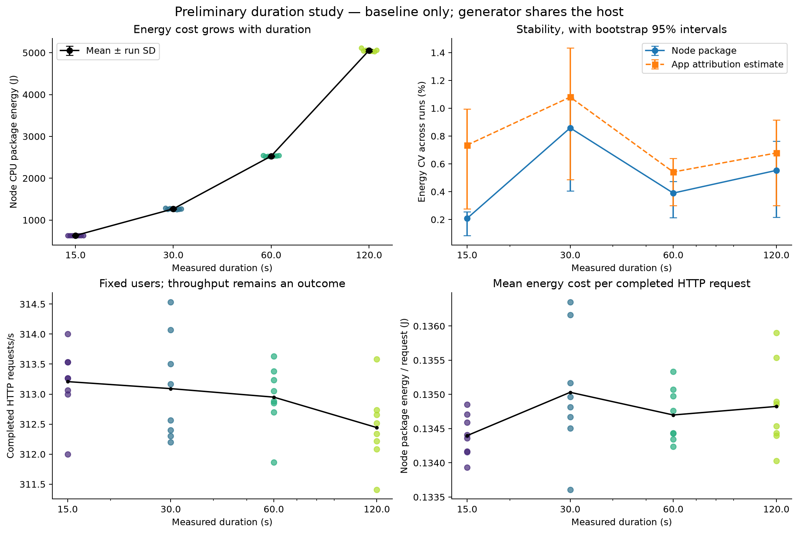
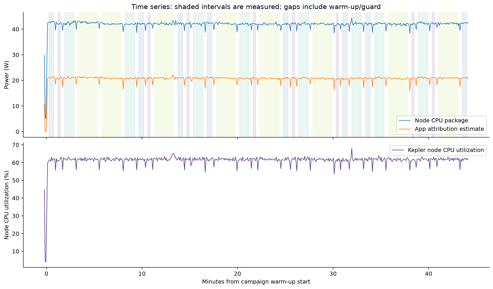
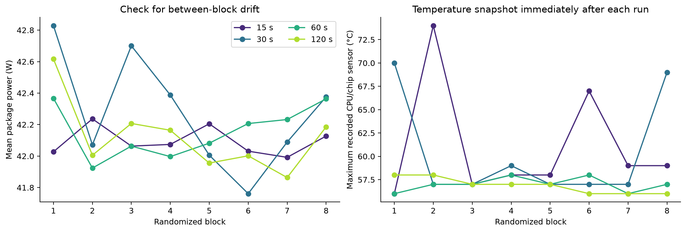
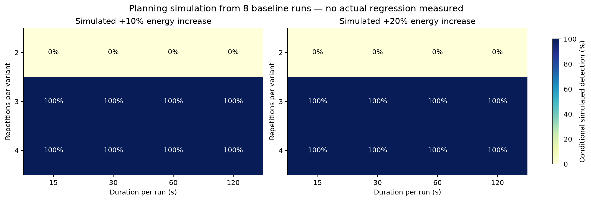

32 runs, 562,888 HTTP requests, 0 failures; 3 users without think-time pauses.
Baseline-only pilot. Locust shares the measured host. No minimum reliable duration is certified; detection charts are simulations, not actual regression tests.
| duration_s | repetitions | mean_energy_j | cv_energy_pct | mean_rps | mean_j_per_request |
|---|---|---|---|---|---|
| 15.000 | 8 | 631.417 | 0.208 | 313.208 | 0.134 |
| 30.000 | 8 | 1268.326 | 0.859 | 313.092 | 0.135 |
| 60.000 | 8 | 2529.262 | 0.390 | 312.950 | 0.135 |
| 120.000 | 8 | 5054.997 | 0.553 | 312.443 | 0.135 |
Lowest observed CV: 0.21% at 15 seconds; uncertainty is shown below.




Full report and limitations · Per-run CSV · Duration summary CSV · PDF charts